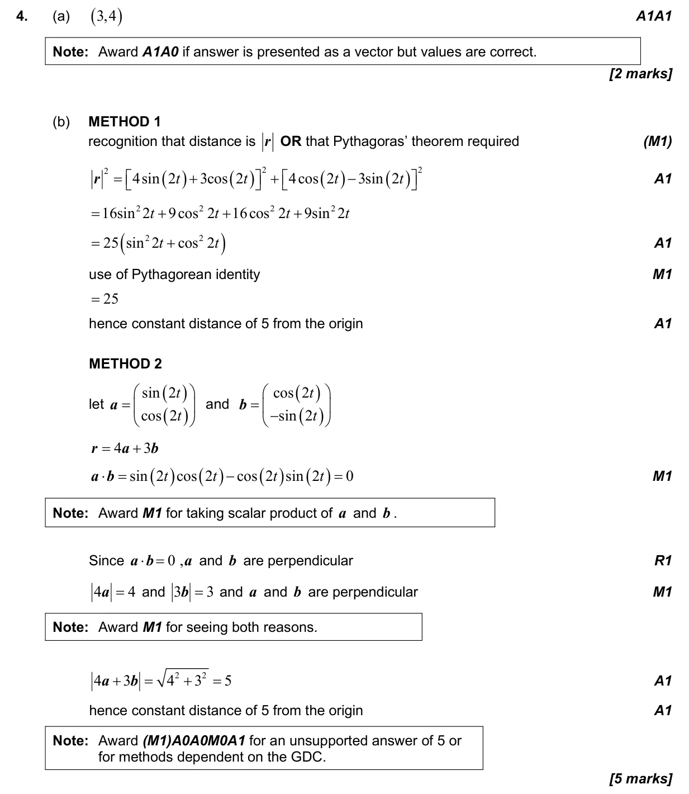
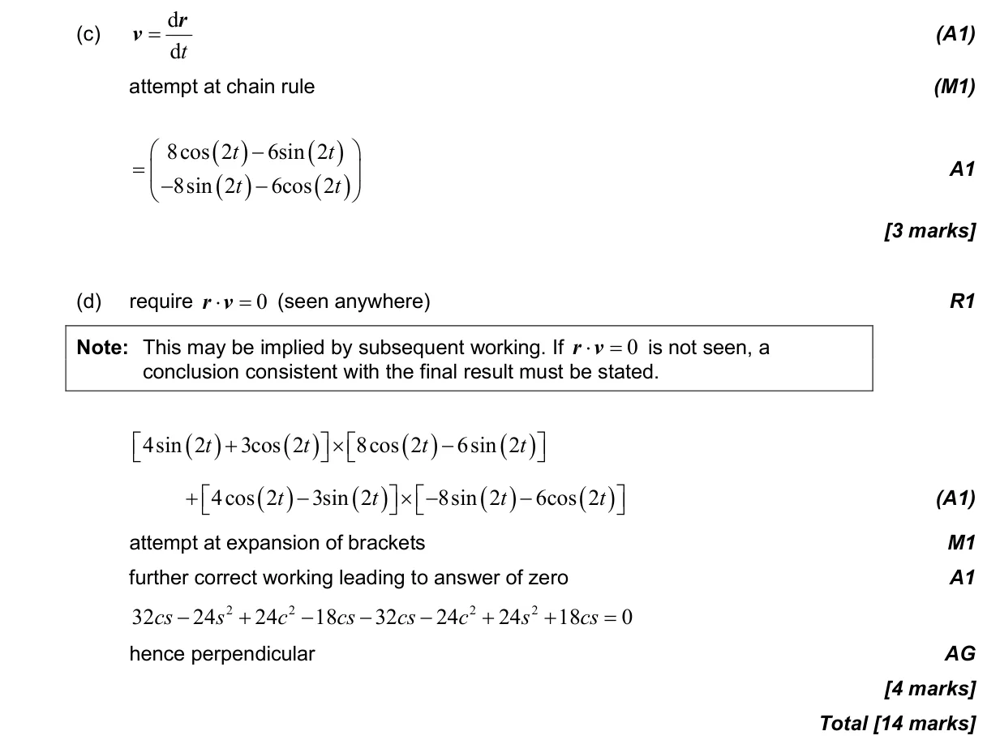

14 marks P2 TZ1 Calculator 3.12 Vector kinematics3.13 Scalar and vector products3.8 The unit circle, the Pythagorean identity, the ambiguous case and graphical trigonometric equations5.9 Further differentiation: standard derivatives, chain, product and quotient rules, related rates Question Hide breakdown abcd Markscheme 